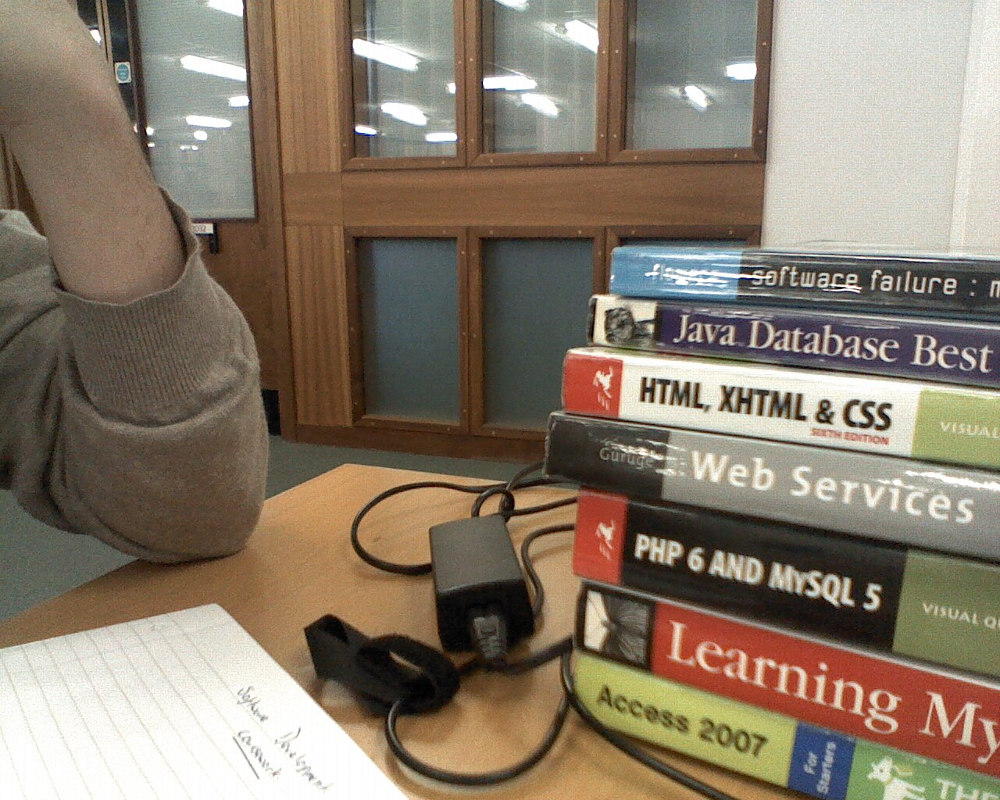

So I've completely changed my background on this. Changed the links and Title of the page, i've taken major ideas from various sources online now.
I've spent most of the day juking around with GIMP, which I haven't done in a while. Making the background in the end was pretty simple, it's an image of
concrete with inverted colours and a noise filter over the top. Looks kind of slick. Which is cool right?
Recently Changed;

This is me at the library, needless to say, I did alot of work That's actually a complete an utter lie
12/02/2013
This is a test! This should create another article section and the image to the right; should remain where it is! FFFunky right?
Pretty cool! If you ask me!, The picture's frame was totally ripped from CSS3. But the photo frame is pretty cool! As is the caption!
Badass! Notice how the text follows the degree of the images rotate! And I didn't even do that! One thing to note is that you can't size
the images by Percentage! Cause the CSS won't work D: I'm sure there's a neato'o way to complete this! But whatever!
Recently Changed;
12/02/2013
More work is to be taken on the site, hopefully I can play around with an Image, with perhaps the use of Captions and Positioning.
Might also create the four other pages - mainly so I've got something to play around with on each. Need to source images for Footer Nav.
And also need to find out what's happening with my main computer - Since it's pretty difficult to do anything on this netbook. Hell
it doesn't even like Minecraft! D: